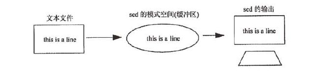

Index
- DNS基本概念
- Master: 正向区/反向区
- Slave: 正向区/反向区
- DNS区域传输限制
- 根提示区、Forward
- Client使用DNS解析
- 扩展： 子域授权
- 扩展： DNS Round Robin
- Puppet简介
- Puppet部署
- 实例：File资源
- 实例：创建模块test1
- 实例：创建模块httpd
- Puppet命名规范
- Puppet资源
- 资源的依赖关系
- notify subscribe
- Puppet部署Nginx
- Puppet部署MySQL
- Master自动签发证书
- Puppet Dashboard
- Puppet Git
- Puppet Cobbler
文本处理：sed
流编辑器 sed（stream editor）
========================================================
一、sed工作流程

sed 是一种在线的、非交互式的编辑器，它一次处理一行内容。处理时，把当前处理的行存储在
临时缓冲区中，称为“模式空间”（pattern space），接着用sed命令处理缓冲区中的内容，处理完
成后，把缓冲区的内容送往屏幕。接着处理下一行，这样不断重复，直到文件末尾。文件内容并没有
改变，除非你使用重定向存储输出。Sed主要用来自动编辑一个或多个文件；简化对文件的反复操作；
编写转换程序等。
sed也叫逐行处理器，
二、命令格式
sed [options] 'command' file(s)
sed [options] -f scriptfile file(s)
sed和grep不一样，不管是否找到指定的模式，它的退出状态都是0
只有当命令存在语法错误时，sed的退出状态才不是0
三、支持正则表达式
注：
与grep一样，sed在文件中查找模式时也可以使用正则表达式(RE)和各种元字符。正则表达式是
括在斜杠间的模式，用于查找和替换，以下是sed支持的元字符。
使用基本元字符集 ^, $, ., *, [], [^], \< \>,\(\),\{\}
使用扩展元字符集 ?, +, { }, |, ( )
使用扩展元字符的方式：
\+
sed -r
四、sed基本用法
# sed -r '' /etc/passwd
# sed -r 'p' /etc/passwd
# sed -r -n 'p' /etc/passwd
# sed -r -n '/root/p' /etc/passwd
# sed -r -n 's/root/alice/p' /etc/passwd
# sed -r -n 's/root/alice/gp' /etc/passwd
# sed -r -n 's/root/alice/gip' /etc/passwd
# sed -r -n '/root/p' /etc/passwd
# sed -r -n '\crootcp' /etc/passwd
========================================================
[root@tianyun ~] cat a.txt
/etc/abc/456
etc
[root@tianyun ~]# sed -n '//etc/abc/456/p' a.txt
sed：-e 表达式 #1，字符 0：no previous regular expression
[root@tianyun ~]#
[root@tianyun ~]# sed -n '/\/etc\/abc\/456/p' a.txt
/etc/abc/456
[root@tianyun ~]# sed -n '\#/etc/abc/456#p' a.txt
/etc/abc/456
========================================================
五、sed扩展
＝＝地址（定址）
地址用于决定对哪些行进行编辑。地址形式可以是数字、正则表达式或二者的结合。如果没有指定
地址，sed将处理输入文件中的所有行。
# sed -n 'p' /etc/passwd
# sed '1,3d' /etc/passwd
# sed -n '/[Jj]ohn/p' datafile
# sed -n '5,/[Jj]ohn/p' datafile
＝＝命令
sed命令：
sed命令告诉sed对指定行进行何种操作，包括打印、删除、修改等。
命令 功能
a 在当前行后添加一行或多行
c 用新文本修改（替换）当前行中的文本
d 删除行
i 在当前行之前插入文本
l 列出非打印字符
p 打印行
n 读入下一输入行，并从下一条命令而不是第一条命令开始对其的处理
q 结束或退出sed
r 从文件中读
! 对所选行以外的所有行应用命令
s 用一个字符串替换另一个
w 将行写入文件
y 将字符转换为另一字符（不支持正则表达式）
h 把模式空间里的内容复制到暂存缓冲区(覆盖)
H 把模式空间里的内容追加到暂存缓冲区
g 取出暂存缓冲区的内容，将其复制到模式空间，覆盖该处原有内容
G 取出暂存缓冲区的内容，将其复制到模式空间，追加在原有内容后面
x 交换暂存缓冲区与模式空间的内容
替换标志 s
g 在行内进行全局替换
i 忽略大小写
==选项
选项 功能
-e 允许多项编辑
-f 指定sed脚本文件名
-n 取消默认的输出
-i inplace，就地编辑
-r 支持扩展元字符
六、sed命令示例
打印命令：p
# sed -r '/north/p' datafile
# sed -r -n '/north/p' datafile
删除命令：d
# sed -r '3d' datafile
# sed -r '3,$d' datafile
# sed -r '$d' datafile
# sed -r '/north/d' datafile
# sed -r '/sout/d' datafile
# sed -r '0,/sout/{/sout/d}' datafile //删除第一个模式匹配的行
替换命令：s
# sed -r 's/west/north/g' datafile
# sed -r 's/^west/north/' datafile
# sed -r 's/[0-9][0-9]$/&.5/' datafile //&代表在查找串中匹配到的内容
# sed -r 's/Hemenway/Jones/g' datafile
# sed -r 's/(Mar)got/\1ianne/g' datafile
# sed -r 's#3#88#g' datafile
多重编辑命令：e
# sed -r -e '1,3d' -e 's/Hemenway/Jones/' datafile
# sed -r '1,3d;s/Hemenway/Jones/' datafile
# sed -r '2{s/WE/UPLOOKING/g; s/Gray/YYY/g}' datafile
# sed -r -n '1p;p' /etc/hosts
# sed -r -n '1{p;p}' /etc/hosts
读文件命令：r
# sed -r '/Suan/r /etc/newfile' datafile
# sed -r '2r /etc/hosts' a.txt
# sed -r '/2/r /etc/hosts' a.txt
写文件命令：w
# sed -r '/north/w newfile' datafile
# sed -r '3,$w /new1.txt' datafile
追加命令：a
# sed -r '2a1111111111111' /etc/hosts
# sed -r '2a1111111111111\
> 222222222222\
> 333333333333' /etc/hosts
插入命令：i
# sed -r '2i1111111111111' /etc/hosts
# sed -r '2i111111111\
> 2222222222\
> 3333333333' /etc/hosts
修改命令：c
# sed -r '2c1111111111111' /etc/hosts
# sed -r '2c111111111111\
> 22222222222\
> 33333333333' /etc/hosts
获取下一行命令：n（试试大小写）
# sed -r '/eastern/{ n; s/AM/Archile/ }' datafile
转换命令：y
# sed -r '1,3y/abcde/54321/' datafile
退出命令：q
# sed -r '5q' datafile
# sed -r '/Lewis/{ s/Lewis/Joseph/; q; }' datafile
暂存和取用命令：h H g G
# sed -r '1h;$G' /etc/hosts
# sed -r '1{h;d};$G' /etc/hosts
# sed -r '1h; 2,$g' /etc/hosts
# sed -r '1h; 2,3H; $G' /etc/hosts
暂存空间和模式空间互换命令：x
反向选择: !
# sed -r '3d' /etc/hosts
# sed -r '3!d' /etc/hosts
七、sed脚本
sed脚本就是写在文件中的一系列sed命令
使用-f 选项指定sed脚本文件名
脚本末尾不能有任何多余的空格或文本
如果命令不能独占一行，就必须以\结尾
脚本中不能使用引号，除非它们是查找串的一部分
反斜杠起到续行的作用
# sed -r -f sedding1 datafile
八、sed常见操作
删除配置文件中#号注释
sed -r -i '/^#/d' file.conf
sed -r -i '/^[ \t]*#/d' file.conf
删除无内容空行
sed -r '/^$/d' file.conf
sed -r '/^[\t]*$/d' file.conf
sed -r '/^[ \t]*$/d' file.conf
删除配置文件中//号注释行
sed -r -i '\c//cd' file.conf
示例：
sed -r -i '/^[ \t]*#/d; /^[ \t]*$/d' /etc/vsftpd/vsftpd.conf
sed -r -i '/^[ \t]*#|^[ \t]*$/d' /etc/vsftpd/vsftpd.conf
sed -r -i '$a\chroot_local_user=YES' /etc/vsftpd/vsftpd.conf
给文件每行加注释
sed -r -i 's/^/#/' filename
每指定行加注释
sed -r -i '10,$s/^/#/' filename
sed -r '3,$s/^#*/#/' filename 将行首零个或多个#换成一个#
sed中使用外部变量
# var1=11111
# sed -i 3a$var1 /etc/hosts
# sed -i "3a$var1" /etc/hosts
# sed -i '$a'"$var1" /etc/hosts